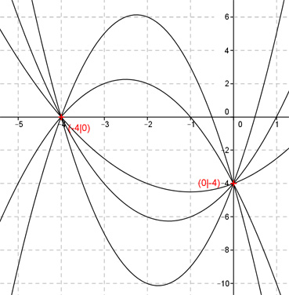

Aufgabe 12 Alle Graphen einer ganzrationalen Funktion 2. Grades gehen durch die Punkte (-4|0) und (0|-4). Wie lautet die Funktionsgleichung dieser Kurvenschar? Allgemeine Form einer ganzrationalen Funktion 2. Grades: f(x) = ax2 + bx + c f’(x) = 2ax + b f’’(x) = 2a 3 Bedingungen nötig - nur 2 Bedingungen gegeben --> keine eindeutige Funktionsgleichung --> es gibt eine Kurven- oder Graphenschar 1. Geht durch den Punkt (-4|0) bedeutet: f(-4) = 0 --> a * (-4)² + b * (-4) + c = 0 --> 16a - 4b + c = 0 I 2. Geht durch den Punkt (0|-4) bedeutet: f(0) = -4 --> a * 0² + b * 0 + c = -4 --> c = -4 c = -4 eingesetzt in I: 16a - 4b - 4 = 0 |+4b 16a - 4 = 4b |:4 b = 4a - 1 Gesuchte Funktionsgleichung: f(x) = ax2 + (4a - 1)x - 4 Darstellung für 5 verschiedene a. Vom Scheitelpunkt aus von oben nach unten: a1 = -2 a2 = -1 a3 = 0,5 a4 = 1 a5 = 2 